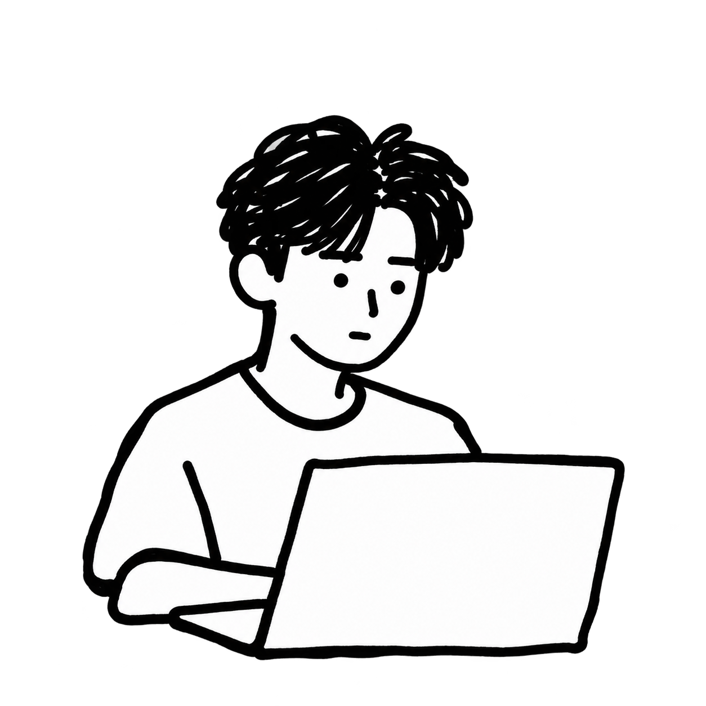

01 / 关于我
ABOUT ME.
把复杂的东西做得简单一点，再有趣一点。

你好，我是 Bao。一个在设计和代码之间来回穿梭的人，喜欢简单、真诚，以及那些带着手工痕迹的小东西。
我关注界面如何被理解，也在意它被使用时的感受。我喜欢从一张潦草的纸面草图开始，逐渐把想法整理成可以真正使用的产品。
现在，边学边做
学习、设计，也写一点代码。目前在整理这个个人网站，让作品和日常灵感有一个可以慢慢积累的地方。
关注的方向
- Web / UI
- 页面的布局、信息的组织，以及使用时的感受。
- Creative Coding
- 让代码成为表达想法和探索视觉的工具。
屏幕之外
散步、拍照、随手画画。那些不经意的小发现，也会成为下一次创作的起点。
从作品开始认识我
这里先从个人网站本身开始记录。更多经历与作品，会随着整理逐步补充。
看看我在做什么 →